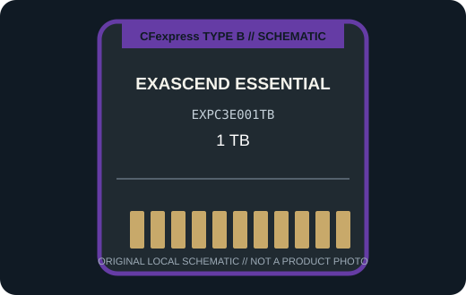

[ REMOVABLE MEDIA // PRODUCT RECORD ]
Exascend Essential CFexpress Type B 1 TB (EXPC3E001TB)
A 1 TB CFexpress Type B Essential card from Exascend, tracked by the manufacturer model EXPC3E001TB. This entry describes the removable card only; the camera or reader is separate.

MEDIA ONLY: Exascend Essential CFexpress Type B 1 TB (EXPC3E001TB). Capacity, interface generation, and compatibility refer to this model and not other cards in the same family.
Capacity, interface and compatibility
| Manufacturer model | EXPC3E001TB; CFexpress Type B, Essential series |
|---|---|
| Nominal capacity | 1 TB. Usable space varies with formatting and system-reserved capacity. |
| Interface | PCIe Gen 3 x2 with NVMe; CFexpress Type B physical format. |
| Performance | Exascend identifies EXPC3E001TB as its 1 TB Essential CFexpress Type B variant. Published peak/sustained speeds vary by capacity and host; use the current SKU datasheet rather than generalizing from another size. |
| Host compatibility | Use only in a CFexpress Type B camera or reader that lists CFexpress Type B support and accepts a 1 TB card. Check host firmware, filesystem support, and any model-specific capacity ceiling. |
| Write protection | No physical card-level write-protect switch is specified for this model; use host controls and verified backups. |
| Model-specific note | The series page includes multiple capacity options; verify EXPC3E001TB on the card label because an Essential Type B family name alone does not identify capacity or performance. |
Handling and preservation
No finite shelf-life or archival-life guarantee is claimed here. Keep the card clean, dry, labeled, and in its protective case; avoid touching contacts and never remove it during a write. After use, verify files and maintain multiple checksummed copies on independent media. Before a migration or recovery, record the exact card SKU, camera/reader, firmware, filesystem, and host.
Sources and standards
- Exascend — Essential CFexpress Type B product familyManufacturer product information for the named series or exact model; confirm SKU and host notes.
- Newegg — Exascend Essential CFexpress Type B 1 TB listingRetail listing cross-checking the exact 1 TB product designation and capacity.
- CompactFlash Association — CFexpress card typesStandards reference for card form factors; not a substitute for device-specific compatibility.
- Library of Congress — Digital preservation formatsIndependent preservation planning reference for removable digital media.
Manufacturer data apply to the specific product generation shown. Standards define the format family; the camera and reader manuals govern host compatibility.